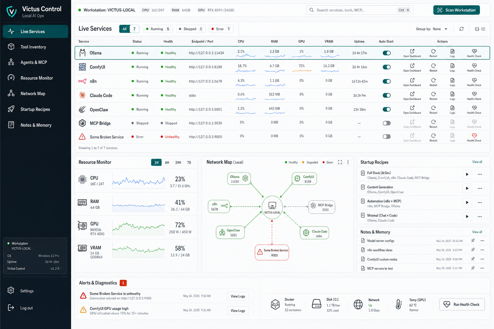

LOCAL-FIRST · OPERATIONS · REACT/TS
Victus Control
Een local-first operations-platform om een AI-werkstation te begrijpen, structureren en beheren: live runtime-ontdekking, inventaris, resource-monitoring, security-review en een intent-map die je gewenste opstelling vergelijkt met de werkelijkheid.
RESULTAAT
Toont in één oogopslag het verschil tussen je bedóelde en je live opstelling — zonder cloud-afhankelijkheid.

01 HET PROBLEEM
Een lokaal AI-werkstation groeit snel uit tot een kluwen: modellen, automatiseringen, dashboards en tools verspreid over processen en poorten. Wat draait er echt, wat hoort er te draaien, en waar wijkt de werkelijkheid af van je bedoeling?
02 WAT HET DOET
- Live runtime-ontdekking
- Scant draaiende diensten en tools en toont status, health en resource-kost per lokale AI-tool — in plaats van losse terminals en giswerk.
- Intent Map — bedoeld vs. waargenomen
- Teken hoe je werkstation hóórt te zijn en laat Victus dat vergelijken met wat er live draait: OK, ontbrekend, blootgesteld of onverwacht. Dát verschil is de kern van het project.
- Resource-monitor
- CPU, RAM, GPU en VRAM in één oogopslag, zodat je meteen ziet waar de druk zit tijdens zwaar AI-werk.
- Persistente inventaris
- Onthoudt bekende tools met notities en statuslabels, ook als ze net niet draaien — een levende catalogus in plaats van een kerkhof.
- Security-review
- Onbekende luisteraars belanden in een review-flow in plaats van stil open te staan; je beslist wat vertrouwd is.
- Agents & MCP-diagnostiek
- Zicht op gekoppelde agents en MCP-servers, bovenop een testbare React/TypeScript-architectuur met SQLite-state.
03 WAT IK ERVAN LEERDE
De interessante vraag was niet ‘nog een dashboard’, maar: laat de gebruiker de bedóelde opstelling definiëren en vergelijk die met de live werkelijkheid. Dat verschil — desired vs. observed — is waar het echte inzicht zit.
INTERESSE?
Laten we praten.
Vertel me wat je ervan vindt — of wat je ermee zou willen doen.